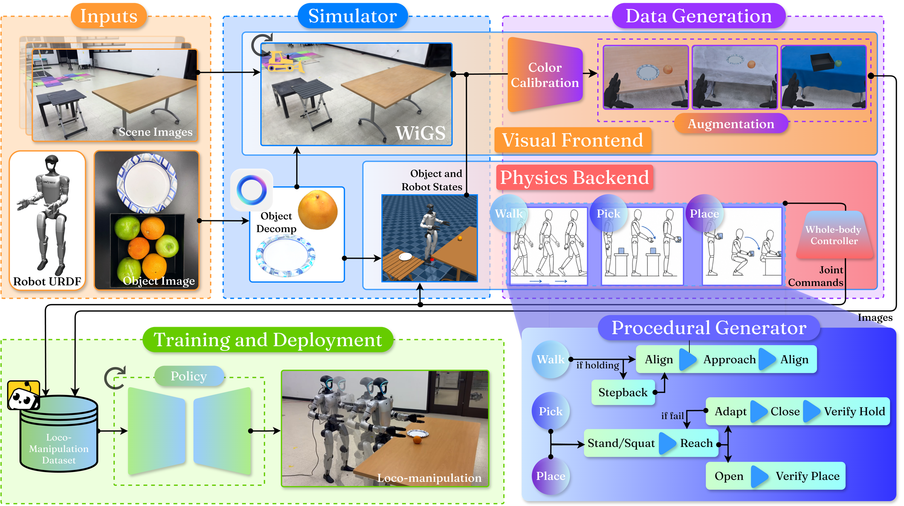
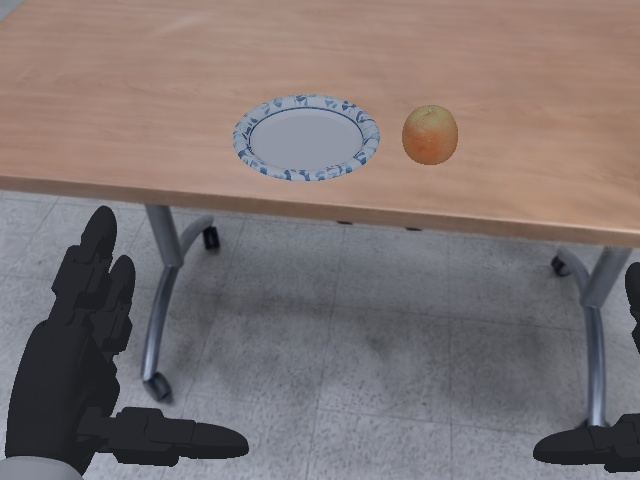
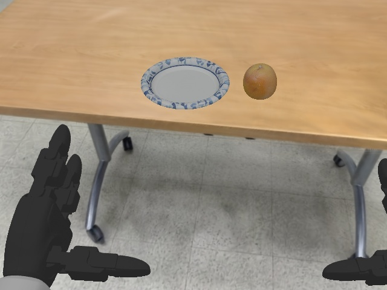
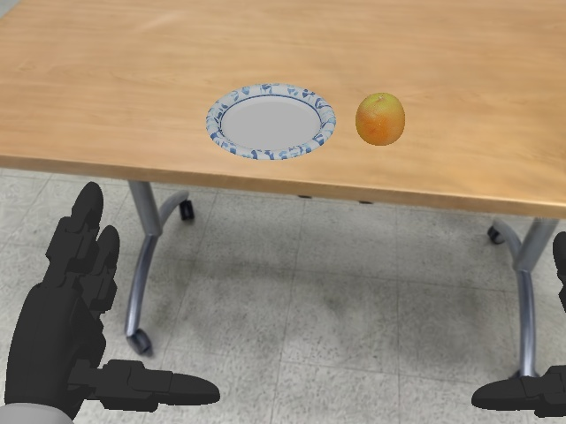
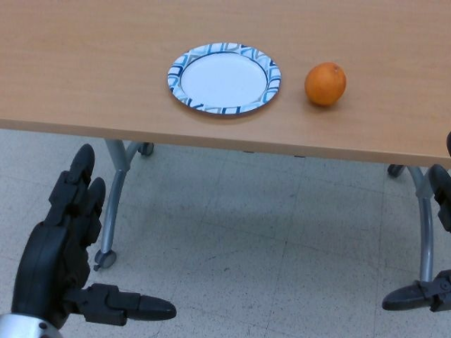
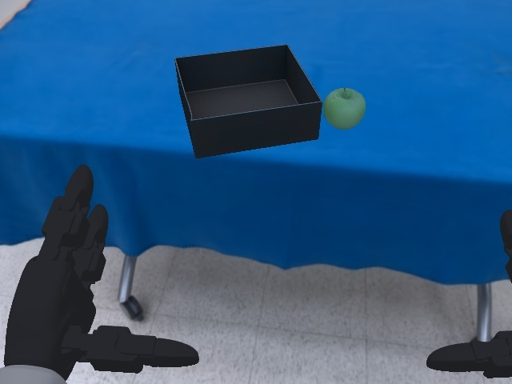
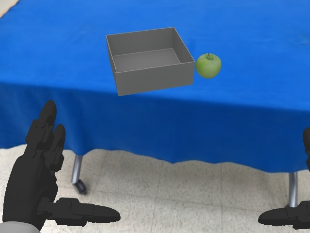
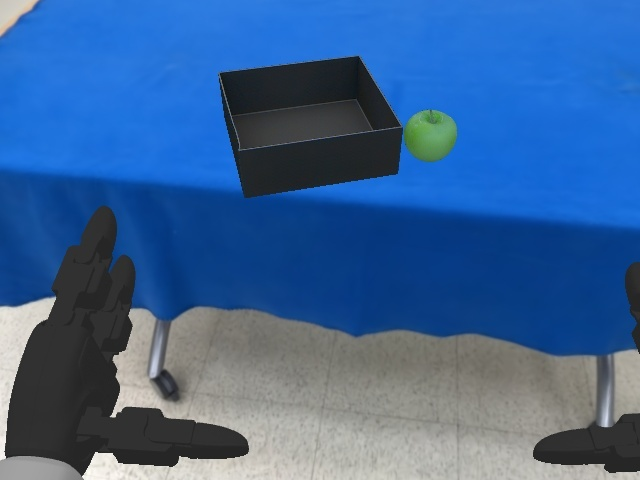
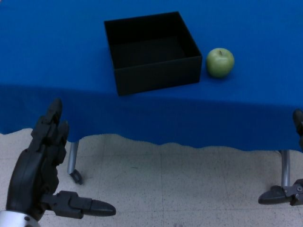

Three pick-and-place tasks of increasing whole-body difficulty × three VLA backbones (ψ0, π0.5, GR00T N1.6).
Collecting teleoperation demonstrations for humanoids is slow and expensive — and simulator-trained VLA policies have, until now, failed to transfer to real humanoid loco-manipulation. What if a phone scan is all you need? LEGS composites the robot and objects over a photorealistic 3D Gaussian Splatting background inside MuJoCo, and procedurally generates labeled demonstrations — no teleoperation, no seed demos, no human video. We find that LEGS:
A phone scan in. A humanoid skill out. Everything in between is synthesized.

hover a step — or a part of the pipeline — to highlight it
A deterministic two-stage calibration aligns the render to the robot's deployment camera — the first stage calibrates the object mesh, and the second is applied to both the mesh and the 3DGS background.








Policies fine-tuned on LEGS-generated data, deployed zero-shot on a Unitree G1.
Task 1 — manipulation (ψ0)
Task 2 — loco-manipulation (ψ0)
Task 3 — long-horizon (GR00T N1.6)
GR00T N1.6
ψ0
π0.5
Motion is recorded independently of appearance, so each episode re-renders under new objects and backgrounds at ~0.1 GPU-hr versus >1.5 operator-hr for re-teleoperation (≈15× cheaper).
Even on Task 1 — the simplest, stationary pick-and-place — a policy trained only on the default demonstrations (orange→plate on a wooden table) collapses once the objects, scene, or prompt change.
Scene shift
“place the orange on the plate”
Object shift
“place the apple in the box”
Scene + object shift
“place the apple in the box”
Scene shift
“pick the orange, turn right, place it on the plate”
Object shift
“pick the apple, turn right, and put it in the box”
Scene + object shift
“pick the apple, turn right, and put it in the box”
Task 3 with the orange pushed beyond the training distribution.
Far left (out-of-distribution)
Far right (out-of-distribution)
Real-robot end-task success across three tasks, three VLA backbones, and four data conditions — 1,110 trials total.
LEGS (200) is best or tied on every task and every backbone
Even at the same data budget, LEGS (50) beats Teleop (50).
ψ0
GR00T N1.6
π0.5
Under the hardest shift (objects + scene), re-rendering wins
(a) Photorealism beats mesh-only
(b) Augmentation beats scale
Q1Can teleoperation-free synthetic data match human teleoperation for VLA fine-tuning?
Yes — on every (backbone, task) cell. LEGS (200) matches or exceeds Teleop (50) across all nine experiments. On the long-horizon Task 3, teleoperation collapses to 0/10 across all three backbones, whereas LEGS achieves up to 6/10.
Q2Is the improvement attributable to dataset size?
No. At a budget-matched 50 demonstrations, LEGS (50) still matches or surpasses Teleop (50) on every experiment, isolating the gain to the data pipeline rather than its scale.
Q3Does photorealistic rendering matter, or does mesh-only synthesis suffice?
Photorealism improves end-task success by 1.6×–3.25× across the three VLA backbones. Holding the pipeline fixed, LEGS (200) beats the mesh-only SAM3D (200) baseline on all nine (backbone, task) experiments.
Q4How efficiently can LEGS adapt to new appearance conditions?
~15× cheaper than teleoperation, with task success retained. Each new appearance condition requires ~0.1 GPU-hr to re-render versus >1.5 operator-hr to re-teleoperate. Under the hardest object-and-scene shift, LEGS-AUG reaches 100 / 80 / 40% on Tasks 1–3, while both teleoperation and unaugmented LEGS fail (0–10%).
@article{kim2026legs,
title = {LEGS: Fine-Tuning Teleop-Free VLAs for Humanoid Loco-manipulation in an Embodied Gaussian Splatting World},
author = {Kim, Hojune and Chen, Timothy and Sun, Jiankai and Osterberg, Lars W. and Chen, Qianzhong and Wang, Ke and Schwager, Mac},
journal = {arXiv preprint arXiv:2606.01458},
year = {2026}
}